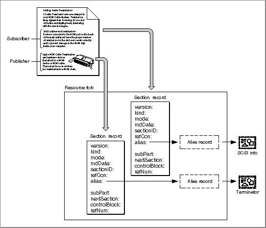

Creating the Section Record and Alias Record
Your application is responsible for creating a section record and an alias record for each publisher and subscriber section within an open document.The section record identifies each section as a publisher or subscriber and provides identification for each section. The section record does not contain the data within the section; it describes the attributes of the section. Your application must provide its own method for associating the data within a section with its section record. Your application is also responsible for saving the data in the section.
The
aliasfield of the section record contains a handle to its alias record. The alias record is a reference to the edition container from the document that contains the publisher or subscriber section. You should be familiar with the Alias Manager's conventions for creating alias records and identifying files, folders, and volumes to locate files that have been moved, copied, or restored from backup. For information on the Alias Manager, see Inside Macintosh: Files.When a user saves a document, your application should store all section records and alias records in the document's resource fork. Corresponding section records and alias records should have the same resource ID.
Figure 2-9 shows a document containing a publisher and subscriber, and the corresponding section records and alias records.
Figure 2-9 A document with a publisher and subscriber and its resource fork

A section record contains information to identify the data contained within a section as a publisher or a subscriber, a time stamp to record the last modification of the section, and unique identification for each section. The
SectionRecorddata type defines the section record.TYPE SectionRecord = RECORD version: SignedByte; {always 1 in 7.0} kind: SectionType; {publisher or subscriber} mode: UpdateMode; {automatic or manual} mdDate: TimeStamp; {last change in document} sectionID: LongInt; {application-specific, } { unique per document} refCon: LongInt; {application-specific} alias: AliasHandle; {handle to alias record} {The following fields are private and are set up by the } { RegisterSection function described later within this } { chapter. Do not modify the private fields.} subPart: LongInt; {private} nextSection: SectionHandle; {private, do not use as a } { linked list} controlBlock: Handle; {may be used for comparison } { only} refNum: EditionRefNum; {private} END;Whenever the user creates a publisher or subscriber, call the
Field Description
version- Indicates the version of the section record, currently $01.
kind- Defines the section type as either publisher or subscriber with the
stPublisherorstSubscriberconstant.mode- Indicates if editions are updated automatically or manually.
mdDate- Indicates which version (modification date) of the section's contents is contained within the publisher or subscriber. The
mdDatefield is set to 0 when you create a new subscriber section and to the current time when you create a new publisher. Be sure to update this field each time publisher data is modified. The section's modification date is compared to the edition's modification date to determine whether the section and the edition contain the same data. The section modification date is displayed in the publisher and subscriber options dialog boxes. See "Closing an Edition" on page 2-28 for detailed information.sectionID- Provides a unique number for each section within a document. A simple way to implement this is to create a counter for each document that is saved to disk with the document. The counter should start at 1. The section ID is currently used as a tie breaker in the
GoToPublisherSectionfunction when there are multiple publishers to the same edition in a single document. The section ID should not be 0 or -1. See "Duplicating Publishers and Subscribers" on page 2-58 for information on multiple publishers.refCon- Reference constant available for application-specific use.
alias- Contains a handle to the alias record for a particular section within a document.
NewSectionfunction to create the section record and the alias record.err := NewSection(container, sectionDocument, kind, sectionID, initialMode, sectionH);TheNewSectionfunction creates a new section record (either publisher or subscriber), indicates whether editions are updated automatically or manually, sets the modification date, and creates an alias record from the document containing the section to the edition container.You can set the
sectionDocumentparameter toNILif the current document has never been saved. Use theAssociateSectionfunction to update the alias record of a registered section when the user names or renames a document by choosing Save As from the File menu. If you are creating a subscriber with theinitialModeparameter set to receive new editions automatically, your application receives a Section Read event each time a new edition becomes available for this subscriber.If an error is encountered, the
NewSectionfunction returnsNILin thesectionHparameter. Otherwise,NewSectionreturns a handle to the allocated section record in thesectionHparameter.Set the
initialModeparameter to the update mode for each subscriber and publisher created. You can specify the update mode using these constants:CONST sumAutomatic = 0; {subscriber receives new } { editions automatically} sumManual = 1; {subscriber receives new } { editions manually} pumOnSave = 0; {publisher sends new } { editions on save} pumManual = 1; {publisher does not send } { new editions until user } { request}See "Using Publisher and Subscriber Options" beginning on page 2-43 for detailed information on update modes for publishers and subscribers. See Listing 2-4 beginning on page 2-33 for code that uses theNewSectionfunction to create a publisher. See Listing 2-6 on page 2-40 for code that usesNewSectionto create a subscriber.